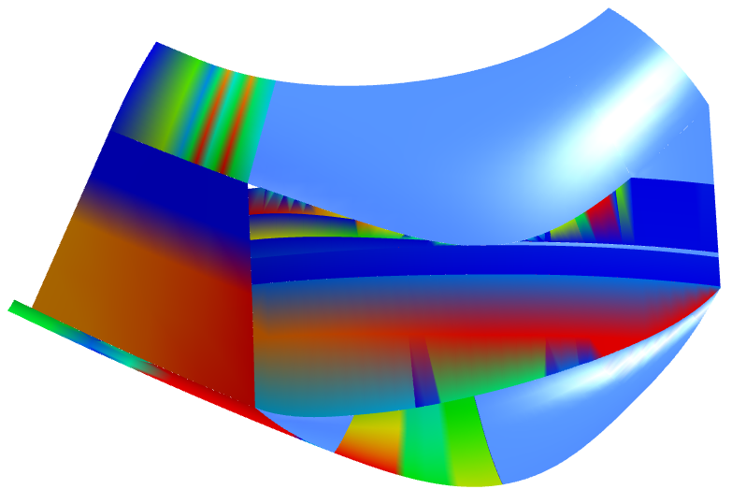

Check quality / healing
Check the quality of entities and repair specific data. → |
Check the geometry of curves, faces and the solid topology, for example:
Differences between the tolerance of the face and its boundary
Differences in the tolerance from corners and boundaries of faces, i.e. a ‘vertex-edge gap’
Incorrect edge sequence
Gaps between faces (non-manifold) for checking whether a solid is closed and whether the volume is therefore fully delineated.
Self-cuts for boundaries and edges
Loops in boundaries and edges
Entities smaller than tolerance, for example, faces whose area is smaller than the value resulting from the square of the tolerance.
Irregular control points of curves
Irregular parametrization of faces and curves

Click the message text to select a deviation in the graphics area.
The Curvature plot command can be used within another command such as Check quality.
Right-click to open a context menu with the following commands:
Command | Explanation |
|---|---|
Healing | Repair entity. This command is only available if the determined data can be repaired. |
Show | Show entity. |
Hide | Hide entity. |
Show only this | Only show the selected entities. |
Select
Select entities. The number of selected entities is displayed.
Settings
Default: Entities primarily with reference to CAD construction and CAM programming.
Advanced: Check entities for errors primarily with reference to software development issues.
Reference tolerance: Set a reference value for the quality check, e.g., to check entity tolerance.
Min. reference area: Set a reference value for the quality check. Check all faces larger than the area specified.
Zoom: Display jumps directly to the entity.